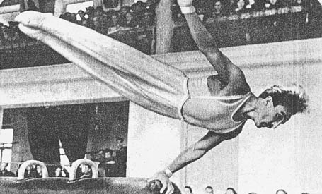

Grant Chaginyan (USSR)
1952 Olympic Games AA Silver Medalist
1954 World PH Champion

Medal Total
Olympic Games: 2
Gold, 2 Silver
World Championships: 2 Gold, 1 Bronze
Grant was born in 1923 and trained at Spartak Yerevan. A Merited Master of Sport and Merited Coach of the Armenian SSR, Chaganyan was a member of the Armenian Sports Committee in the 1970s. He died in 1998.
Competition Results
1948
USSR Championships: 1st FX
1949
USSR Championships: 1st FX, 1st PH
USSR Cup: 2nd PB
World College Summer Games: 1st Team, 1st AA, 1st PH, 1st R, 1st PH, 1st HB, 5th FX, 5th V
1950
USSR Championships: 1st PH
USSR Cup: 3rd AA
1951
USSR Championships: 2nd AA
USSR Cup: 2nd PB
World College Summer Games: 1st Team, 2nd AA, 1st PB, 1st HB, 2nd PH, 3rd R, 3rd V
1952
Olympic Games: 1st Team, 2nd AA, 1st R, 2nd PH,
4th PB
USSR Championships: 1st AA, 1st PB
1953
FRA-USSR Dual Meet: 1st Team, 2nd AA
USSR Championships: 2nd AA
USSR Cup: 2nd PH, 2nd R, 2nd PB
1954
USSR Championships: 1st R
USSR Cup: 3rd AA, 2nd PH 2nd PB
World Championships: 1st Team, 3rd AA, 1st PH, 5th R,
6th FX
1955
USSR Championships: 1st PH
USSR Cup: 3rd AA, 2nd R
1956
USSR Cup: 3rd AA, 2nd PH, 2nd R
1957
Moscow Summer Sports Games: 1st Team, 6th AA
USSR Cup: 2nd AA, 2nd R, 2nd HB, 3rd PH
This page was created on September
08, 2006 and was last updated on October 31, 2024.
© Gymn Forum